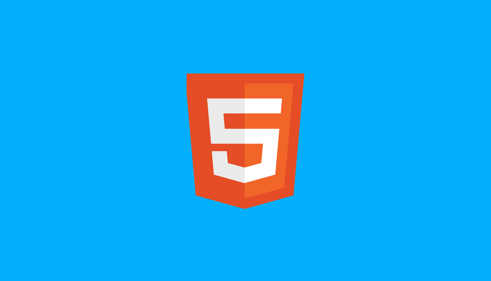
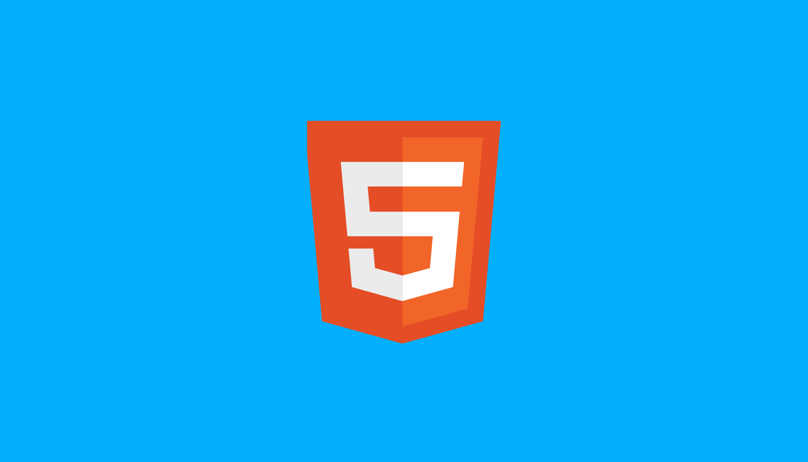

QUEM SOU EU?
Olá! Meu nome é Alefe Patrick Maciel Rodrigues Pereira, e sou um Programador em aperfeiçoamento na linguagem de programação Python. Sou persistente em tudo o que faço e gosto de trabalhar em equipe, sempre procurando ser leal ao ambiente de trabalho e às pessoas com quem trabalho.
Me formei no Ensino Médio junto com o Técnico em Desenvolvimento de Sistemas e Empreendedorismo, e durante meus estudos, adquiri habilidades em sites que ajudam no web design, como o Canva e o Figma. Além disso, sou formado em programas de escritório, o que me ajuda na administração do trabalho.
EU MERCADO DE TRABALHO:
Sou novo no mercado, mas tenho uma grande vontade de aprender e impressionar. Atualmente, estou focando meus estudos em desenvolvimento web, buscando aperfeiçoar minhas habilidades em Python para criar aplicações web de alta qualidade e eficiência. Utilizo o sistema operacional Windows para programar.
OBJETIVOS FINAIS:
Meus objetivos são ter contatos futuros para sempre me manter atualizado no mercado de trabalho na programação e crescer ainda mais, com futuros cursos e experiências. Meu objetivo final é me tornar um designer com personalidade criativa.


 
